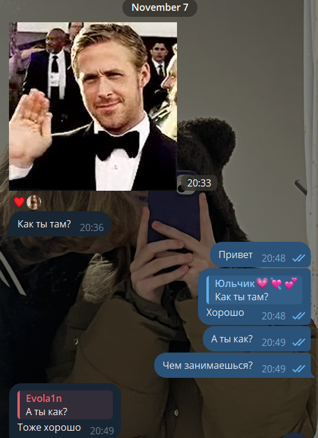

нояб 7

В этот день мы познакомились
В этот день мы познакомились
Наша первая прогулка
Мы решили посмотреть фильм (Семь жизней (2008)) и пообщались 10 часов
Первый раз написали сладких снов с сердечком
Вместе посмотрели фильм дома "Эта дурацкая любовь" и сделали эту фотку
Первая игра в шахматы в дискорде, а 9 дек первая игра в шахматы на сайте Chess.com (За все время мы сыграли ХХХ партий и вы выиграли меня ХХ раз)
Первая ночевка
Мы поехали в Нюрнберг
Мы лепили фигурки
Я попався
Мы сделали эту фотку
Мы отмечали Рождество(и вы подарили мне вот этого красавца)
Первая ночевка у тебя дома
Я впервые познакомился с твоей семьей и мы вместе встретили новый год
Мужик над мной посмеялся и показал пальцами что я кунимен
Мы сделали такую фотку, а также посмотрели первые серии "Тетради смерти"
Вы сломали свой пульт от ленты (фиксик)
Мы поиграли в "Огонь и Вода"
В этот день была сделана эта фотка
У моей любимой Юлечки был день рождения и ей исполнилось 19лет О_О
Вы сделали мне сюрприз и самостоятельно добрались до моего дома
Мы вместе досмотрели "Тетрадь смерти"
Начали просмотр "Токийского гуля"
Стало известно, что вы сдали "Leben in Deutschland" на максимальный балл (умничка)
Наш СОТЫЙ огонек в тикитоке О_О
Спасибо тебе за каждый момент, за каждую улыбку и за то, что ты есть в моей жизни.